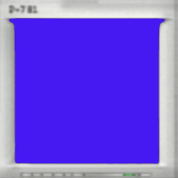
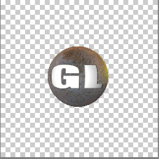

Lesson 29 - Blending Images
This lesson is relatively short (we'll make up for that in the next lesson). The original NeHe tutorial was about blitting and blending images together. However, given the way WebGL and three.js are architected, there isn't really need or way to "blit" images since image management of that nature is taken care of at the GPU level. But we can cover how images can be blended together. We'll do a little more shader programming to achieve it.
The lesson has two images:
- An image of the front of a monitor which is square with notransparency
- An old version of the GL logo in which only the logo itself is opaque and the rest of the image is transparent
Here's the monitor:

And here's the GL logo (the gray checkerboard is of course the transparent area):

First, we set up the GFScene object, as always, then we create a CubeGeometry 2 units on a side. Then we get to the good part. We are going to do the blending in the shaders, so we need to load the two textures then initialize the shaders. The arguments to the ShaderMaterial are the contents of the two shaders and the two textures (as uniforms).
var cubeGeom = new THREE.BoxGeometry( 2, 2, 2 );
var vertShader = document.getElementById('vertex_shader').innerHTML;
var fragShader = document.getElementById('fragment_shader').innerHTML;
var textureLoader = new THREE.TextureLoader();
textureLoader.load( "images/monitor.png", function( texture ) {
monitor = texture;
textureLoader.load("images/gl.png", function (texture) {
gl = texture;
var uniforms = {
tOne: {type: "t", value: gl},
tSec: {type: "t", value: monitor}
};
var shaderMat = new THREE.ShaderMaterial({
uniforms: uniforms,
vertexShader: vertShader,
fragmentShader: fragShader
});
var mesh = new THREE.Mesh(cubeGeom, shaderMat);
gfxScene.add(mesh);
});
});The shaders are pretty simple:
<script id="fragment_shader" type="x-shader/x-fragment">
uniform sampler2D tOne;
uniform sampler2D tSec;
varying vec2 vUv;
void main(void) {
vec3 c;
vec4 Ca = texture2D(tOne, vUv);
vec4 Cb = texture2D(tSec, vUv);
c = Ca.rgb * Ca.a + Cb.rgb * Cb.a * (1.0 - Ca.a);
gl_FragColor= vec4(c, 1.0);
}
</script>
<script id="vertex_shader" type="x-shader/x-vertex">
varying vec2 vUv;
void main() {
vUv = uv;
vec4 mvPosition = modelViewMatrix * vec4( position, 1.0 );
gl_Position = projectionMatrix * mvPosition;
}
</script>The vertex shader doesn't do much since the geometry is not being modified, only the shading. The first part of the fragment shader calls the texture2D method which fetches the appropriate pixel from each texture. Then the next line calculates how to blend the two textures together. The pixel from each texture is multiplied by the alpha (transparency) value, except that the monitor's pixel value is also multiplied by 1 minus the alpha value of the logo's pixel. The effect is that where the logo is not transparent, the monitor's contribution becomes zero.
And that's it! Click on this link to see the actual rendered demo in all it's blended glory!